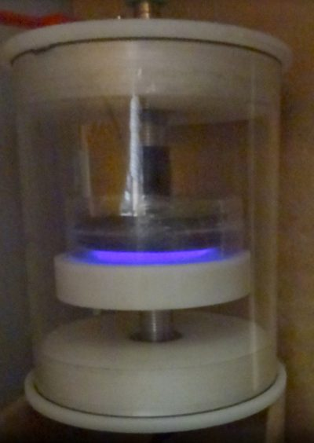

Uso de plasma não térmico para modificação de superfície de polímeros biodegradáveis
📅 07/02/2022✍️ Inergiae
Uso de plasma não térmico para modificação de superfície de polímeros biodegradáveis
Os polímeros fornecem a maioria dos materiais de embalagem comuns porque apresentam várias características desejadas, como flexibilidade, leveza e transparência. No entanto, o aumento do uso de embalagens poliméricas levou a sérios problemas ecológicos devido à sua não biodegradabilidade.
Os polímeros biodegradáveis, que podem ser tanto sintéticos como naturais, vêm sendo estudados como uma alternativa interessante em substituição aos polímeros convencionais nas embalagens.
Biopolímero de baixo custo
O amido é um polímero natural, biodegradável, de baixo custo, disponível o ano todo. Porém, possui propriedade de barreira ao vapor de água ruim, além de ser frágil, o que dificulta sua utilização como embalagem de alimentos crocantes, ou que requerem embalagens fortes.
Quando suas propriedades mecânicas são melhores, os custos são elevados, inviabilizando a produção de embalagens, já que grande parte das embalagens utilizadas atualmente é produzida a partir de polímeros commodities, de baixo custo.
A alternativa
Uma alternativa seria unir as propriedades dos polímeros biodegradáveis naturais com outros materiais, através da mistura entre eles na forma de blendas, compósitos ou laminados. Porém, muitas vezes o grande impasse acaba sendo a interação entre esses materiais.
O tratamento com plasma
A fim de melhorar a compatibilidade entre os diferentes materiais, a tecnologia de plasma pode ser utilizada, visto que ela modifica a superfície dos polímeros, química ou fisicamente.
Quimicamente através da adição ou remoção de grupos na superfície, e fisicamente devido ao desgaste da superfície modificando a rugosidade. Sendo assim o plasma pode ser utilizado para alterar a hidrofilicidade de uma superfície polimérica e aumentar a adesão entre diferentes materiais.
Está sendo usado nesta pesquisa o modelo Pulse0130 da Inergiae, com saída pulsada, tensão até -30kV, e frequência de 30Hz até 1KHz. Fornecido por: Helena Meurer Heidemann (mestranda do programa de pós-graduação em Engenharia Química – UFSC)
 Reator de Plasma utilizado para experimentos na Pós-Graduação em Eng. Química e Alimentos da UFSC.